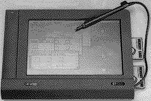

Previous
Next
TOC
Ersatzteil-Teilebezeichnung
68HC000-8
= CPU MC68HC000 mit 8 MHz in PLCC
68HC901
= MFP-Chip MC68HC901 in PLCC
Die wenigen Maschinen die es überhaupt in funktionsfähigen Zustand
gibt, (der Prototyp wurde 1991 auf der CeBit gezeigt) hat 1 4 MB Ram
und besitzt ein spezielles TOS mit Schrifterkennung. Der STylus/Atari
STpad besitzt nur ein nicht hintergrundbeleuchtetes LC-Display, um
eine Tastatur anzuschliessen muß man eine externe Tastatur verwenden
die am Werk eingebauten Tastaturanschluß einsteckt werden muß. Mit
vollgeladenen Akkus ist eine Betriebszeit zwischen 10 und 20 Stunden
erreichbar.
An Schnittstellen verfügt der STBook über einen Seriellen und Pa-
rallelen Port sowie über eine
Westernbuchse für den Anschluß einer
externen Tastatur und über jeweils eine Midi-In und Midi-Out Buchse.
Außer den Einschüben für einen Akku und zweier Ramcards verfügt
der STylus noch über einen Anschluß für eine Docking-Station.

Die Anschlußbuchsen am STylus
Der Akku hat nur zwei Kontaktplatten für die Federn: wenn das
Typenschild hinten auf dem STylus lesbar ist, liegen die drei Fah-
nen darunter. Die linke ist am STylus-Akku unbenutzt, die mittlere
hat "+", die rechte "-" als Aufschrift. Am Batterie-Pack ist die
mittlere unbenutzt und die linke hat "+".
Der Akkus ist übrigens baugleich zum STBook Akku!
Wenn der Akku seine Kapazität verliert kann man folgenden Ersatztyp
nehmen:
NiCd-Power Pack 9,6 Volt mit 0,8 Ampere
Bestellnummer 255793-99
Preis 29,85 DM
Conrad Elektronik, Klaus-Conrad-Straße 1, 92240 Hirschau
Telefon 0180/5312111, Telefax 0180/5312110, T-Online +20744#
Er hat zwar weniger Kapazität als das Original, passt aber von den
mechanischen Abmessungen her bestens und die Ladeschaltung im Netz-
teil kommt mit ihm auch zurecht.
weiterblättern
Kapitel Der Atari STylus/Atari STpad, Seite 1